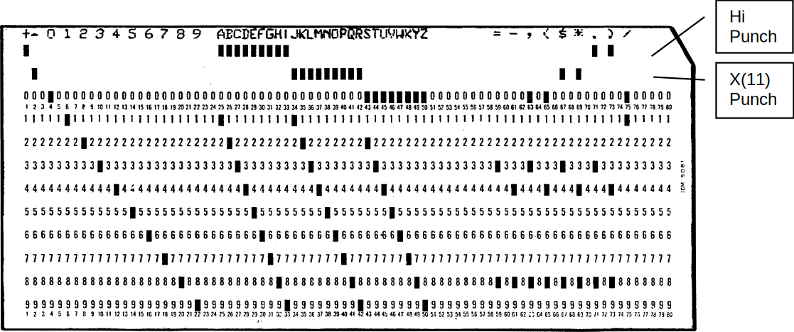

1. IBM 650 simulator user’s guide¶
- Date:
2020-05-14
- Revision:
$Format:%H$
- Copyright:
See LICENSE.txt for terms of use.
1.1. Introduction¶
This manual documents the features and operation of the IBM 650 simulator. It is intended for use in conjunction with the SIMH Users’ Guide manual, which describes how to compile and run the simulator, as well as the general commands that may be entered at the Simulation Control Program (SCP) prompt.
1.1.1. The IBM 650 Magnetic Drum Data-Processing Machine¶
IBM sold the IBM 650 Magnetic Drum Data-Processing Machine from 1953 through 1962. The first unit was installed in December 1954.
IBM made several enhancements during the life of the computer (source: Wikipedia).
- 1954: Initial model
1K or 2K word drum memory (IBM 650)
Connection of one device Card Read Punch (IBM 533 or 537)
IBM 407 for offline printing of punched cards
- 1955: Storage Unit
60 words of core memory
3 index registers
Floating-point
Magnetic Tape support
Connection of up to 3 devices: card read punch or modified IBM 407 for online printing
- 1956: RAMAC Disc support
Enhancements in Storage Unit to support disc
IBM 838 inquiry stations support
- 1959: Model 4
4K word drum memory
All of these were vacuum tube machines. Each machine word is composed of 10-decimal digits plus sign. It is a decimal machine.
Reading or writing a word takes 96 microseconds (called the word time in IBM Operation manual and described as having a duration of 0.096 milliseconds). This is the basic machine cycle. As main memory is implemented by a drum, the CPU waits while drum is seeking to the word to read or write. This can take from zero to 49 cycles. An average on optimized code is about 5 cycles per instruction. The execution speed for optimized code is range of 2K instructions per second.
1.1.2. Simulator files¶
The simulator sources are divided into a set of files for the Simulator Control Program and its support libraries, and a set of files for the IBM 650 CPU and device simulations; the latter reside in a subdirectory of the directory that contains the SCP files. The former set is common to all SIMH simulators, whereas the latter set is specific to the virtual machine being simulated. The files that make up this simulator are:
Subdirectory |
File |
Contains |
|---|---|---|
|
|
System architectural declarations |
|
SCP interface |
|
|
Main CPU simulator |
|
|
IBM 533 (card reader part) simulator |
|
|
IBM 533 (card punch part) and IBM 407 printing simulator |
|
|
IBM 727 tape simulator |
|
|
IBM 355 RAMAC Disk Storage |
|
|
Executes all the |
|
|
Contains the included software and test-run script files (See usage section) |
PDF files of the original IBM 650 hardware and software manuals are available from Bitsavers.
The computer programming and its operation are described in IBM 650 Magnetic Drum Data-Processing Machine manual of operation, Form 22-6060-2 (1956).
1.2. Simulator features¶
The IBM 650 simulator contains the following device simulations:
Device name(s) |
Simulates |
|---|---|
|
IBM 650 Drum Data Processing Machine
IBM 652 Control Unit
IBM 653 Storage Unit
1K word, 2K word, or 4K drum
|
|
IBM 533 Card Reader |
|
IBM 533 Card Punch |
|
IBM 407 Printing |
|
IBM 727 Magnetic Tape |
|
IBM 355 RAMAC Disk Storage |
The simulator has been tested with and supports the following software:
IBM SOAP II as stated in the 24-4000-0 manual at Bitsavers
IBM SOAP IIA-4000
IBM Interpretive Floating Decimal Interpretive System
Bell Interpretive System
Lockheed Regional Assembler
Carnegie Internal translator
IBM Fortransit (version II (S))
Case Institute SuperSoap
The simulator also provides extensive facilities for tracing CPU and I/O device operations.
1.2.1. Hardware-equivalent actions¶
The current implementation does not provide simulations of the CPU or peripheral device front panels. Instead, commands entered through the simulation console are used to perform hardware actions. The simulation commands that substitute for IBM 650 console actions are:
Hardware console action |
Equivalent simulation command |
|---|---|
Set PROGRAMMED switch to |
DEPOSIT CSWPS 0 | 1 |
Set OVERFLOW switch to |
DEPOSIT CSWOS 0 | 1 |
Set HALF CYCLE switch to |
DEPOSIT HALF 0 | 1 |
Set ERROR switch |
Not simulated |
Set CONTROL to |
BREAK address |
Setting the console switches |
DEPOSIT CSW value |
Display lower accumulator |
EXAMINE ACCLO |
Display upper accumulator |
EXAMINE ACCUP |
Display distributor |
EXAMINE DIST |
Display program register |
EXAMINE PR |
Display read-out storage |
EXAMINE address |
Display read-in storage |
DEPOSIT address value |
Press TRANSFER key |
DEPOSIT AR address |
Press PROGRAM START key |
GO |
Press PROGRAM STOP key |
|
Press COMPUTER RESET key |
RESET |
Mounting media on a peripheral device is simulated by the ATTACH command. For example, entering the ATTACH CDR1 card-deck-image-filename command is equivalent to loading the card deck into the read hopper of the IBM 533.
1.2.2. Simulator-specific commands¶
In general, all of the commands documented in the SIMH Users’ Guide manual are available for use with the IBM 650 simulator. Commands whose execution or parameters are implementation-defined are specified below.
1.2.2.1. Symbolic display and entry¶
When examining or depositing into memory, command-line switches specifying the symbolic mode and format may be used to override the default numeric mode, as follows:
Switch |
Mode interpretation |
|---|---|
|
String of up to five characters |
|
A CPU instruction opcode |
If the -C switch is specified,
the value is displayed as five characters delimited by single quotes.
Depositing with -C accepts up to five displayable characters.
They can optionally be enclosed by quotes (single or double).
If less than five are supplied,
the command pads on right-side with spaces up to five characters.
If more than five are supplied,
the sixth and following characters are ignored.
If a character not belonging to the IBM 650 character set is supplied,
it is interpreted as space.
If a character not belonging to the IBM 650 character set is displayed,
it is shown as ~.
Lowercase letters are converted to uppercase.
If the -M switch is specified,
the value is displayed or accepted as a CPU machine instruction opcode mnemonic,
as described in the Operation Manual.
Note that the names of opcodes can range from two letters
(such as RD)
up to five letters
(such as BRMIN).
The names used are not the SOAP assembler ones
(all of them have three letters).
If neither switch is used, the normal 10-digit decimal form is assumed. Digits can be separated by spaces for ease of reading. A sign can be included before or just after the last digit (no space separator). If a number has less than 10 digits, it is assumed to have leading zeroes. Values are displayed as 10 adjacent digits followed by a trailing sign. A negative zero (minus zero) value is allowed.
Memory addresses are entered as 4 decimal digits without intervening spaces.
Examples:
examine 0100
100: 9011112222-
examine –c 0100
100: 9011112222- '0~~~~'
examine –m 0100
BRD10 1111 2222
deposit –c 0100 hola
examine –c 0100
100: 6876736100+ 'HOLA '
deposit –c 0100 ' HOLA'
examine –c 0100
100: 0068767361+ ' HOLA'
The DEPOSIT and EXAMINE SCP commands accept addresses in the drum range, from 0 to 999, or to 1999 depending on the size of drum memory. EXAMINE accepts addresses of 8000 and beyond for the console, distributor, and lower and upper accumulators; and (if Storage Unit enabled) index registers and IAS storage contents.
1.2.2.2. RESET¶
The RESET command is equivalent in hardware to pressing the COMPUTER RESET console button.
The PROGRAM RESET and ACCUMULATOR RESET console buttons are not simulated.
1.2.2.3. RUN and GO¶
The RUN and GO commands do not accept any parameter addresses. Execution will start at the address specified by the AR register.
The IBM 650 does not have a Program Counter/Instruction Counter register. Architecturally, it is not necessary, as each instruction word contains the address of the next instruction to execute.
Register AR indicates the address of the instruction to be loaded in the PR register, thus acting as the Program Counter on the first half of instruction execution (I-Cycle). However, is overwritten by the address of the data read or written during instruction execution (D-Cycle). If an error occurs during a D-Cycle, e.g., the data address to be read from the drum is invalid, the CPU stops without updating the AR register with address of the next instruction. As the simulator reproduces this behavior, AR cannot be used as a Program Counter. Also note that as AR is overwritten during instruction execution, there is no trace at all of where the current instruction in the PR register came from the drum.
SIMH relies on a Program Counter for command display of user information. For example, when the CPU stops, the simulator uses the program counter to display the current instruction address and mnemonic on the simulation console.
To permit this, a fictional IC register (Instruction Counter) has been added to the simulation, even though it has no equivalent on real hardware. This register keeps track of the address of the current instruction for display purposes.
As this IC register has no use in the simulated CPU, altering its value has no effect. This is why it is necessary to deposit the address in the AR register to set the address of the next instruction to execute.
The RUN command does an implied RESET, so it is equivalent in hardware to pressing the console panel RESET COMPUTER key, then the TRANSFER key, and finally the PROGRAM START key. As RESET clears all of the registers, AR will be zero, so execution starts at drum address zero.
The GO command is equivalent to pressing the TRANSFER key on the console and is the way to start or resume execution after a programmed halt. Execution starts at the instruction addressed by the AR register value.
There is a special case when program halts on a STOP opcode instruction.
STOP instruction is the normal way to end a program or to stop execution, because there is an error to notify to the computer operator. Normally the error code is the contents of DA part of STOP instruction, shown on computer console as AR register value.
When CPU halted on STOP instruction, if the user enters a GO command on SCP console, then the program execution will resume using STOP’s instruction IA address, instead of current AR contents.
This allows using the GO command to resume the execution after a programmed stop.
1.2.2.4. STEP¶
The STEP command is used to execute program instructions on a one-by-one basis.
By default, when the simulator steps, it executes a full instruction cycle (an I-Cycle and a D-Cycle) and then stops.
On real hardware, stepping is done only by cycle halves. This is simulated with:
DEPOSIT HALF 1
In this case,
STEP will only execute an I-Cycle or a D-Cycle alternatively.
Examining the HALF CPU register will show which cycle will be done on next step:
1 for an I-Cycle,
or 2 for a D-Cycle.
To return to normal full instruction cycle execution on stepping, set the value to zero:
DEPOSIT HALF 0
During stepping, the IC register will show the next instruction to be executed. If the CPU stopped because of an error, IC points to the current offending instruction, not to the next one.
If half-cycle stepping is set, the same instruction will be displayed twice (first on the I-Cycle step, and then on the D-Cycle step)
1.2.2.5. CARDDECK¶
This command allows one to manipulate card deck files.
The general syntax is
CARDDECK [-Q] operation parameters...
Allowed operations are:
- SPLIT:
To split source deck in two decks based on a criteria
- JOIN:
To join two or more decks in one destination deck
- PRINT:
To print the given deck
Default format for card files is AUTO,
this allow mix source decks with different formats.
To set the format for carddeck operations, use
SET CDR0 FORMAT=format
See section IBM 533 Card Reader/Puncher (CDR) for details on formats.
1.2.2.5.1. Switches¶
-Q:Quiet operation: suppress messages
1.2.2.5.1.1. CARDDECK SPLIT¶
Split either the source deck file or the deck being punched in IBM 533 device in two separate destination decks.
CARDDECK SPLIT count {dev | file0} file1 file2
1.2.2.5.2. Parameters¶
- count
Split the source deck based on number of cards.
count is the number of cards in the first destination deck, remaining cards goes to second destination deck.
If count is negative, it indicates the number of cards to be kept in second destination deck, remaining cards goes to first destination deck.
If count is
5CD, the command assumes that the source deck contains 5-word-per-load-card. The command will put 5-word-per-load-cards in second destination deck, and the rest of cards in first destination deck.If count is
PAT, the command assumes that the source deck contains SOAP availability cards (as result of a PAT pseudoop execution during assembly). The command will put availability cards in second destination deck, and the rest of cards in first destination deck.- {dev | file0}
If this parameter is
CDP1,CDP2, orCDP3, the source deck will be taken from attached file to the device (a file must be attached, and it is automatically detached).If not a device, this parameter indicates the filename for source deck.
- file1
First destination deck file.
- file2
Second destination deck file.
Files are overwritten if they already exist.
Both file1 or file2 can have same name as source deck
(either the given file0 or the file attached to CDP device).
If 5CD or PAT is used,
the selected cards will go to second deck.
If no card is found in source deck,
the second deck will contain no cards and in consequence,
file2 will have a size of zero bytes.
In this case,
the command deletes file2 to avoid generating an empty file.
SIMH reads the whole source deck file at once in an internal buffer (room for 10K cards), then writes the destination files. Therefore, there is no problem on using same file name as source and destination.
1.2.2.5.3. Examples¶
Put punched cards on deck1.dck,
except the last 10 cards that go to desc2.dck:
carddeck split -10 cdp1 deck1.dck deck2.dck
Remove first 20 cards from deck1.dck:
carddeck split 20 deck1.dck nul deck1.dck
Discard availability cards from deck1.dck:
carddeck split pat deck1.dck deck1.dck nul
Generate a condensed deck file only if deck1.dck contains 5-word-per-card-load cards:
carddeck split 5cd deck1.dck deck1.dck condensed.dck
1.2.2.5.3.1. CARDDECK JOIN¶
Join several source deck files in one destination deck file.
CARDDECK JOIN file1 file2 ... file N AS file
1.2.2.5.4. Parameters¶
- file1
First source deck file.
- file2
Second source deck file.
- file N
Nth source deck file
- file
Destination deck file.
Destination file is overwritten if already exists.
Any source file can have same name as destination deck.
SIMH reads all the source deck files one-by-one in an internal buffer (room for 10K cards), then writes the destination file. Therefore, there is no problem on using same file name as source and destination.
1.2.2.5.5. Examples¶
Add deck1 to the beginning of deck2:
carddeck join deck1.dck deck2.dck as deck2.dck
Create deck2 as a duplicate of deck1:
carddeck join deck1.dck as deck2.dck
If CDR0 FORMAT is AUTO (default),
duplicating a deck
(e.g., carddeck join deck1.dck as deck2.dck)
allows one to convert source decks
(in any format)
to text.
1.2.2.5.5.1. CARDDECK PRINT¶
Print deck on console and on simulated IBM 407 is any file is attached to CPD0.
CARDDECK PRINT file
1.2.2.5.6. Parameters¶
- file
Deck to print.
1.2.2.5.6.1. CARDDECK ECHOLAST¶
Display on console (but do not print on simulated IBM 407) the lasts cards that has being processed and are in the card reader take stacker of IBM 533 Card Read-Punch
CARDDECK ECHOLAST count dev
1.2.2.5.7. Parameters¶
- count
The command will display count last cards arrived to take hopper.
- dev
This parameter should be
CDR1,CDR2, orCDR3. Is the device unit to use when looking for cards in take hopper.
1.2.2.5.8. Examples¶
Display last 3 cards read by cdr1 unit:
carddeck echolast 3 cdr1
1.2.2.6. Device configuration¶
Most devices support user configuration. The general forms of the configuration commands are:
SET {switch...} device option{,option...} SET {switch...} unit option{,option...}
The options available and applicable switches are described in the individual device descriptions below.
1.2.2.7. Enabling and disabling devices¶
All devices other than the CPU, CDR, and CDP may be disabled or enabled.
Disabling a device simulates removing the associated equipment from the main CPU console.
To disable or enable a device, use:
Command |
Action |
|---|---|
SET device DISABLED |
Disable the device |
SET device ENABLED |
Enable the device |
MTn (magnetic tape) and DSKn (disk units) are enabled by default.
1.2.3. Tracing simulator operations¶
The simulator provides options for extensive tracing of the internal operations of selected devices. This is useful as an aid to hardware and software debugging, as well as to gain an understanding of the internal operations of the simulated devices. Devices offer multiple trace reporting levels, from command overviews to detailed operation. Tracing for each device and its separate reporting levels may be enabled independently.
To obtain a trace, two SCP commands must be given:
First, a debug log must be established with the SET DEBUG target command. This command is described in detail in the “Controlling debugging” section of the SIMH Users’ Guide manual. The target can be a text file, so that the trace may be reviewed after capture, or stdout to display the trace data on the console as it is generated.
Second, tracing must be enabled for the desired devices with SET device DEBUG=option commands. The formats of the trace outputs are specific to the devices being traced. All traces for a device can be enabled at once with a SET device DEBUG command.
Tracing does impose some overhead on the simulator, with more detailed tracing slowing the simulator more than higher-level tracing. No overhead is incurred when tracing is suspended with the SET NODEBUG command, even if individual device tracing options remain in effect.
1.3. Processor device simulations¶
1.3.1. Central processing unit¶
The IBM 650 computer console contains the machine-instruction execution unit and the main drum memory. The CPU is configured with commands of the form:
SET CPU option
Device options that may be specified are:
Option |
Action |
|---|---|
1K |
Set the drum memory size to 1000 words |
2K |
Set the drum memory size to 2000 words |
4K |
Set the drum memory size to 4000 words |
DEBUG=option |
Enable tracing |
NODEBUG |
Disable tracing (default) |
SOAPMNE |
Use SOAP opcode mnemonics |
DEFAULTMNE |
Use regular IBM opcode mnemonics (default) |
FAST |
Execute all instructions in one cycle |
REALTIME |
Simulate real number of cycles (default) |
STORAGEUNIT |
Enable IBM 653 Storage Unit |
NOSTORAGEUNIT |
Disable IBM 653 Storage Unit (default) |
CNTRLUNIT |
Enable IBM 652 Control Unit |
NOCNTRLUNIT |
Disable IBM 652 Control Unit (default) |
TLE |
Enable Table LookUp on equal feature |
NOTLE |
Disable Table LookUp on equal feature (default) |
There is no memory default value. Must be set each time the simulation is started.
1.3.1.1. Speed¶
Main computer memory is drum based. Drum rotates at 12500 rpm, this defines the basic timing interval of the CPU: the word time which is 96 microseconds (stated as 0.096 milliseconds in manual).
Word time is also the basic timing unit on simulator. By issuing the SCP command:
SET THROTTLE 11K
… it is possible to simulate the speed of real hardware. Note that throttling needs some seconds to calibrate, during this time CPU will execute at faster speed. As an alternative, to simulate real hardware speed starting at the first simulated instruction, use the already calibrated form of command:
SET THROTTLE 55/5
This will pause host computer 5 msec each 55 simulated word times.
Note that on average, on optimized code an instruction needs 5 words times to execute. This means that on real hardware, the average execution speed is 2000 instructions per second on average.
The above commands sets how much word times per second will be executed by simulator. Another element to consider is the number of word times an instruction needs to execute.
IBM 650 simulator reproduces the number of word times each instruction needs depending on instruction type,
Data Address used,
and angular position of drum.
AL (Add Lowe) instruction needs from 5 (best case) up to 103 word times.
The user can disable the simulation of execution time, so all instructions will need only one word time to execute.
SET CPU FAST |
Each instruction needs only one word time to execute |
SET CPU REALTIME |
Simulate real number of word times needed by instruction to execute (default) |
1.3.1.2. Mnemonics¶
IBM defines the regular instruction opcode mnemonics in Operation Manual.
These mnemonics range from 2-letter
(e.g., AL – Add Lower)
to 5-letter
(e.g., BRNZU – Branch if Non-Zero Upper).
Simulator will use these mnemonics by default.
SOAP provides a new set of instruction opcode mnemonics,
all of them with 3 letters
(AL becomes ALO,
BRNZU becomes NZU).
With the generalization of SOAP usage, IBM changed the mnemonics in its manual’s revisions. For example, IBM 650 Magnetic Drum Data-Processing Machine manual of operation, Form 22-6060-2 (1956) and IBM 650 MDDPM Additional Features, Form 22-6258-0 (1955) use regular mnemonics, while IBM 650 Data Processing System Bulletins, Forms 24-5000-0 up to 24-5004-0 (1958) use SOAP mnemonics.
Simulator allows to choose the mnemonics to be used with the following options:
SET CPU SOAPMNE |
Use SOAP mnemonics |
SET CPU DEFAULTMNE |
Use regular mnemonics (default) |
Simulator will accept both mnemonic types on DEPOSIT SCP commands, whatever this setting is. The EXAMINE -M command will take the setting into consideration when displaying the opcode mnemonic.
1.3.1.3. Storage unit¶
In 1955, IBM released the IBM 653 Storage Unit that provided IBM 650 with additional features:
Immediate Access Storage (
IAS)Index registers
Floating-point support
Synchronizers 2 & 3
Storage unit can be enabled using the following options:
SET CPU STORAGEUNIT |
Enable IBM 653 |
SET CPU NOSTORAGEUNIT |
Disable (default) |
When Storage unit is enabled, the simulator will
recognize and execute the additional instruction opcodes for
IAS, Index, etcdisplay the new opcodes with the EXAMINE -M command
allow one to enter the new opcodes with the DEPOSIT -C command
allow the command EXAMINE to display the contents of Index registers at address 8005, 8006, and 8006, and
IASstorage at addresses 9000–9059
1.3.1.4. Simulation stops¶
The IBM 650 simulator implements several unique stop conditions:
Unknown opcode
I/O error (no card in hopper, read/punch failure, disk error)
Programmed stop
Overflow
Opcode execution error
Address error (store attempt to address 800X, address out of drum memory)
1.3.1.5. Tracing¶
When a debug log has been established, tracing may be configured by specifying one or more of the reporting-level options:
Option |
Reporting level |
|---|---|
|
Opcode instructions executed |
|
Memory data accesses |
|
Register values or processing information |
1.3.1.6. Registers¶
The CPU state contains the registers visible to the programmer (either on code or through the IBM 650 console):
Name |
Size |
Description |
|---|---|---|
10 |
Distributor |
|
10 |
Lower accumulator |
|
10 |
Upper accumulator |
|
10 |
Program register |
|
4 |
Address register |
|
1 |
Overflow |
|
10 |
Console switches |
|
1 |
Console switch programed stop |
|
1 |
console switch overflow stop |
Size is given in digits, not in bits. If size is 1, only 0 and 1 values are allowed. If size is 10, sign is also included.
In addition, these registers are implemented in simulator for convenience:
Name |
Size |
Description |
|
|---|---|---|---|
4 |
Current instruction address |
||
1 |
Deposit: |
Enable (1) or disable (0) half-cycle stepping |
|
Examine: |
Executing I-Cycle (1) or D-Cycle (2) |
||
2 |
Last executed Instruction Operation Code |
||
The PROP pseudo-register is very useful to allow SCP scripts to test, for example, if CPU has stopped because the last instruction was HLT.
1.3.2. IBM 533 card reader/puncher (CDR)¶
The card reader (CDR) reads simulated punched card decks into the computer. Card decks are simulated as file with ASCII lines with terminating newlines.
Card reader files can be either text (one character per column) or column binary (two characters per column). The file type can be specified with a SET command:
SET CDR1 FORMAT=TEXT |
Set ASCII text mode |
SET CDR1 FORMAT=BINARY |
Set for binary card images |
SET CDR1 FORMAT=BCD |
Set for BCD records |
SET CDR1 FORMAT=CBN |
Set for column binary BCD records |
SET CDR1 FORMAT=AUTO |
Automatically determine format |
The ATTACH command simulates putting a card deck in the reader hopper:
ATTACH CDR1 file
1.3.2.1. Symbolic information load¶
The simulator supports loading symbolic information.
If the file is attached with the -L switch,
and it is a standard 1-word load card at address 1951,
then the symbolic information will be associated with the machine address where the load card deposit the word.
ATTACH CDR1 -L file
The symbolic information loaded remains associated with the machine address until a SET CPU size command is issued. When this happens, all symbolic information for all addresses is removed.
For example,
given the card deck text file (deck.dck) in one-word load format:
6I1954195C 0015241000800?000000000D startnop 0000 setx 6I1954195C 0016240004800?600007001A setx rauone stx set x 6I1954195C 0017240011800?210027003? stx stup0001 to 1 6I1954195C 0018240030800?190033000C mpya calculate 6I1954195C 0019240003800?150006006A alob f 6I1954195C 0020240061800?608002001I rau 8002 ... Load address ══╧══╛ │ │ │ │ Word (instruction) ════╧════════╛ ╘════════════════╤═════════════════┙ │ Symbolic Information
The deck is load and run:
set cpu 2k Set 2k memory drum, clears symb info
set debug -n debug.txt Create new file debug.txt for …
set cpu debug=cmd;data;detail … CPU debug info
att cdr1 –l deck.dck Attach program deck w/ symbolic info
d csw 7019519999 Setup load card instruction …
d ar 8000
go … load program into drum
d ar 1000 Setup program start address
go Run the program
The simulator generates the following debug information in the debug.txt file as result of execution:
DBG()> CPU CMD: Exec 1000: 00 NOOP 0000 0004 symb: start nop 0000 setx DBG()> CPU CMD: Exec 0004: 60 RAU 0007 0011 symb: setx rau one stx set x DBG()> CPU DATA: ... Read 0007: 0000000001+ DBG()> CPU DETAIL: ... ACC: 0000000001 0000000000+, OV: 0 DBG()> CPU CMD: Exec 0011: 21 STU 0027 0030 symb: stx stu p0001 to 1 DBG()> CPU DATA: ... Write 0027: 0000000001+ DBG()> CPU CMD: Exec 0030: 19 MULT 0033 0003 symb: mpy a calculate DBG()> CPU DATA: ... Read 0033: 0000000002+ DBG()> CPU DETAIL: ... Mult ACC: 0000000001 0000000000+, OV: 0 DBG()> CPU DETAIL: ... by DIST: 0000000002+ DBG()> CPU DETAIL: ... ACC: 0000000000 0000000002+, OV: 0 DBG()> CPU CMD: Exec 0003: 15 AL 0006 0061 symb: alo b f DBG()> CPU DATA: ... Read 0006: 0000000003+ DBG()> CPU DETAIL: ... ACC: 0000000000 0000000005+, OV: 0 DBG()> CPU CMD: Exec 0061: 60 RAU 8002 0019 symb: rau 8002 DBG()> CPU CMD: Exec 0061: 60 RAU 8002 0019 symb: rau 8002 ... ╘═╤╛ ╘════════╤════════╛ ╘═══════════════╤══════════════╛ Address Instruction Symbolic information
1.3.2.2. Punched cards character set¶
The standard IBM 026 KeyPunch has two available character sets for creating punched cards:
- IBM 026 COMM:
&-0123456789ABCDEFGHIJKLMNOPOR/STUVNXYZ #@ .< $* ,%- IBM 026 FORT:
+-0123456789ABCDEFGHIJKLMNOPOR/STUVRXYZ =' .) $* ,(
The IBM 650 simulator always uses the FORT character set.
Each card contains 80 columns; each column has 12 lines that can be punched.
The upper line on the card: called High Punch, Hi Punch, 12, Y, or Y(12)
The line below: called 11, X, X(11), or Minus Punch
The lines identified as 0 to 9
The following card image shows the punches corresponding to each available character:
When simulating these cards as text files, each column can be mapped to an ASCII character as follows:
0 1 2 3 4 5 6 7 8 9 Numeric digit 0 to 9
? A B C D E F G H I 0 to 9 with Y(12) High-punch set
! J K L M N O P Q R 0 to 9 with X(11) Minus-punch set
a b c x y z Regular alphabetic characters
( ) $ . , = + - / * Allowed symbols
A load card is identified by a Y(12) punch set on any of the 80 columns.
Note that the character set is tied to IBM 026/IBM 407 and not to the IBM 650 itself. When preparing source program cards to be read by a program, some characters are forbidden:
Uppercase letters
AtoIThe question mark (
?)Plus sign (
+) on column 1
If these characters are used,
they will be interpreted as numbers with Y(12) set,
the whole line
(i.e., the punched card corresponding to this line)
will be interpreted as a load card,
and the program will crash when trying to execute it.
Note that the dot (.) and left parenthesis ()) characters,
even if they are coded with Y(12) punches,
are not tested by the simulator when checking if the current card is a load card.
IBM 650 stores alphabetic characters using two digits. The following table[CIT-29-4047-p36] describes the 650 code for each character, and its card punch equivalent code:
Char |
Punch |
650 |
|---|---|---|
|
|
91 |
|
|
92 |
|
|
93 |
|
|
94 |
|
|
95 |
|
|
96 |
|
|
97 |
|
|
98 |
|
|
99 |
Blank |
00 |
|
|
|
48 |
|
|
61 |
|
|
62 |
|
|
63 |
|
|
64 |
|
|
65 |
|
|
66 |
|
|
67 |
|
|
68 |
|
|
69 |
|
|
20 |
|
|
18 |
|
|
19 |
|
|
71 |
|
|
72 |
|
|
73 |
|
|
74 |
|
|
75 |
|
|
76 |
|
|
77 |
|
|
78 |
|
|
79 |
|
|
30 |
|
|
49 |
|
|
29 |
|
|
31 |
|
|
82 |
|
|
83 |
|
|
84 |
|
|
85 |
|
|
86 |
|
|
87 |
|
|
88 |
|
|
89 |
|
|
90 |
|
|
38 |
|
|
39 |
Table taken from http://bitsavers.org/pdf/ibm/650/29-4047_FORTRAN.pdf, page 36.
1.3.3. IBM 533 card punch (CDP)¶
The card punch (CDP) punches card decks with data sent from computer.
Card decks are simulated as files.
Card punch files can be either text (one character per column) or column binary (two characters per column). The file type can be specified with a SET command:
SET CDP1 FORMAT=TEXT |
Set ASCII text mode |
SET CDP1 FORMAT=BINARY |
Set for binary card images |
SET CDP1 FORMAT=BCD |
Set for BCD records |
SET CDP1 FORMAT=CBN |
Set for column binary BCD records |
SET CDP1 FORMAT=AUTO |
Automatically determine format |
The ATTACH command simulates putting a blank card deck into the card punch feed hopper:
ATTACH CDP1 file
1.3.4. IBM 727 magnetic tape (MT)¶
The Magnetic Tape (MT) reads and writes reels of magnetic medium.
Tape reels are simulated as files in standard SIMH tape format.
To use tapes, both IBM 652 Control Unit and IBM 653 Storage Unit must be enabled. If not, tape opcodes will be not available, and CPU will halt on trying to execute them with undefined opcode error.
Six tapes are allowed,
ranging from MT0 to MT5.
MT0 maps to 8010 address,
MT5 to 8015 address.
The ATTACH command simulates mounting and loading a tape reel in tape unit:
ATTACH MTn file
Each individual tape drive support several options:
SET MTn REWIND |
Sets the mag tape to the load point |
SET MTn LOCKED |
Sets the mag tape to be read-only |
SET MTn WRITEENABLE |
Sets the mag tape to be writeable |
SET MTn LENGHT |
Set tape medium length (50 to 10000 foot) |
SET MTn FORMAT=SIMH |
Sets SIMH tape format |
SET MTn FORMAT=E11 |
Sets E11 format |
SET MTn FORMAT=TPC |
Sets TPC format |
SET MTn FORMAT=P7B |
Sets P7B format |
By default, tapes have a length of 2400 feet.
1.3.5. IBM 355 RAMAC storage (DSK)¶
The RAMAC Disk storage (DSK) reads and writes to one up to four hard disk units.
Hard disk units are simulated as files.
To use RAMAC, both IBM 652 Control Unit and IBM 653 Storage Unit must be enabled. If not, disk opcodes will be not available, and CPU will halt on trying to execute them with undefined opcode error.
Four disk units are allowed,
ranging from DSK0 to DSK3.
The ATTACH command simulates powering on disk unit:
ATTACH DSKn file
1.3.6. Panel wiring¶
The IBM 650 has no I/O formatting facilities. It can only read and punch cards using the IBM 533 device.
Formatting is done by wiring the IBM 533 control panel. This maps how the words sent by the computer are to be punched. In addition, the wiring maps how the punch marks read from cards are to be set up as word values.
In each program’s documentation, it is usual to have a section describing the needed IBM 533 control panel wiring, the column format for input card, and maybe the panel wiring for the IBM 407 to print out the results.
This wiring is outside the scope of the current simulation. In order to use the IBM 533, several predefined wirings have been defined. These can be selected using
SET CDR1 WIRING=option
or
SET CDP1 WIRING=option
where option can be one of the following:
Option |
Description |
|---|---|
|
Simulates SOAP II assembler wiring |
|
Simulates SOAP IIA multipass assembler wiring |
|
Simulates SuperSoap assembler |
|
Simulates Bell floating-point Interpretive System wiring |
|
Simulates IT compiler wiring |
|
Simulates an 8-word per card wiring, with no translation (default) |
|
Simulates wiring for Lockheed Regional Assembler cars |
|
Simulates wiring for Interpretive Floating Decimal System |
|
Simulates FORTRANSIT compiler wiring |
The 8WORD wiring just punches/reads cards with the word value from the first eight words of the I/O buffer.
No character translation is done.
1.3.7. Printing¶
The IBM 650 has no special I/O for printing. On real hw, printing is done by the following procedure:
Collect punched cards from IBM 533
Feed them into the card input hopper of an IBM 407
Set up the IBM 407 control panel wiring to obtain the desired print formatting
Print the cards from the input hopper
On real hardware, this is a manual offline procedure, done outside of computer’s control.
To simulate printing,
it is possible to attach a file to device CDP0 that will act as the printer part of the IBM 407.
For example:
attach cdp1 deck.dck
set cdp1 wiring=soap
set cdp1 echo
set cdp1 print
attach cdp0 printout.txt
The SCP command attach cdp1 deck.dck saves the cards punched by simulated IBM 533 to the file deck.dck.
Then the required wiring is selected with set cdp1 wiring=soap.
This defines the formatting to be used for words sent by the computer to be punched or printed.
The SCP command set cdp1 echo instructs the simulator to echo the printed format of each punched card to the console.
The SCP command set cdp1 print instructs the simulator to send the printed format of each punched card to the file attached to device CDP0.
1.4. Software support¶
This IBM 650 release supports the following software:
Software |
Notes |
|---|---|
Interpretive
Floating
Decimal
System
Date: Sep/1954 |
|
Regional
Assembly
Routine
Date: Jun/1955 |
|
Floating-point
Interpretive
System
(BELL interpreter)
Date: Mar/1956 |
|
Internal
Translator
(IT Compiler)
Date: 1956 |
|
SOAP II Date: 1957 |
|
FOR TRANSIT Date: Aug/1957 |
|
SOAP IIA-4000 Date: 1959 |
|
SuperSoap Date: 1959 |
|
1.5. Simulator usage¶
1.5.1. Assemble a SOAP program¶
Files |
Description |
Hardware equivalent |
|---|---|---|
|
SOAP II assembler deck |
Punched card deck |
|
Source program to be assembled |
Punched card deck |
|
Assembled program output |
Blank cards deck |
|
SOAP assembly listing printout |
Paper listing |
The following steps are described on page 15 of the SOAP II manual (24-4000-0) in the Machine Operator’s Guide section:
SCP commands |
Comment |
Real hardware equivalent |
|---|---|---|
set cpu 2k
set cdr1 wiring=soap
att cdr1 soapII.dck
set cdp1 wiring=soap
att cdp1 deck_out.dck
|
Use a 2k machine Set SOAP wiring
Attach soap assembler
Attach file for assembled
program output
|
SOAP II needs a 2k machine.
|
dep cswps 1
dep half 0
dep cswos 0
dep cswos 0
dep cswos 0
dep cswos 0
|
These are the defaults and can be omitted. |
Set programmed switch to STOP
Set half cycle switch to RUN
Set control switch to RUN
Set display switch to DISTRIBUTOR
Set overflow switch to SENSE
Set error switch to STOP
|
dep csw 7019519999
dep ar 8000
go
|
Load a read card (RD) opcode opcode at address 8000 (the storage entry switches address), and execute it. |
SOAP is being loaded, set (70, 1951, 9999) in storage
entry switches
Press computer-reset key
Press program-start key (computer stops when finished
loading SOAP deck into drum)
|
att cdr1 source.dck
set cdp1 echo, print
att cdp0 print.txt
|
Set up the simulated IBM 407 for printing the punched cards that will be generated. Set up to print and display cards punched as they are generated. |
Put source deck in read hopper |
dep csw 0000001000
dep ar 8000
go
|
Start SOAP at address 1000 |
Set (00, 0000, 1000) in storage entry switches
Press computer-reset key
Press program-start key
|
det cdp1
det cdp0
|
The |
Get cards punched from the IBM 533 output stacker.
Move them to the IBM 407 input feed to print
the assembly listing.
|
1.5.2. Available software¶
The available software files are in the i650/sw directory. These files have been typed from listings information from documents available on BitSavers.
The xxx_run.ini script will allow one to load and run the source program given as a parameter. build_xxx.ini will allow one to build the main program deck.
All INI files are in the i650/sw directory. The language file is in its own folder.
1.5.2.1. Interpretive floating decimal system¶
Files |
Description |
|---|---|
|
SIMH script to load and run FDS programs |
|
Folder contents: |
|
Loader for FDS deck in five-word format (load card) |
|
FDS main deck (five-word format), binary format |
|
Regional assembler starter card (see doc) (load card) |
|
Sample program |
How to run:
sim> do run_ra.ini print_drum_ctrl_cards.txt print_drum_src.txt 0900 deck_in.dck
1.5.2.2. Regional assembler¶
Files |
Description |
|---|---|
|
SIMH script to load and run source programs |
|
Folder contents: |
|
Loader for any deck in five-field format (load card) |
|
Regional assembler main deck (five-field format) |
|
Regional assembler starter card (see doc) (load card) |
|
Sample assembled program (five-field format) |
|
Sample assembled program (five-field format) |
|
Sample Reg.Ass. source program (control cards) |
|
Sample Reg.Ass. source program |
How to run:
sim> do run_ra.ini print_drum_ctrl_cards.txt print_drum_src.txt 0900 deck_in.dck
1.5.2.3. Floating-point interpretive system¶
Files |
Description |
|---|---|
|
SIMH script to build IS main deck from source using SOAP II |
|
SIMH script to load and run source programs |
|
Folder contents: |
|
Restoration comments |
|
Source for program build (system loader) |
|
Main program deck (1-word load format) |
|
Main program source |
|
Main program source for trace |
|
Main program source extension |
|
Sample IS source. Prints prime numbers < 50 |
How to run:
sim> do Build_is_from_decks.ini ntr lbox
sim> do run_is.ini bell/is_example_1_src.txt
1.5.2.4. SOAP assembler¶
Files |
Description |
|---|---|
|
SIMH script to build SOAP from source using condensed SOAP II card deck |
|
SIMH script to assemble and run source programs using SOAP II |
|
SIMH script to assemble and run using SOAP IIA-4000 |
|
Folder contents: |
|
Restoration comments |
|
Main program assembly listing (SOAP II) |
|
Main program source |
|
Main program deck (1-word load format) |
|
Main program deck (7-word per card load format) |
|
Sample 1 SOAP source (as in manual) |
|
Main program assembly listing (SOAP IIA-4000) |
|
Main program source |
|
Main program deck (1-word load format) |
|
SOPA IIA-4000 Tape Librarian |
|
Sample routines for library tape |
|
Sample usage of library routines with TAP pseudo-op |
How to run:
sim> do build_soap_from_source.ini
sim> do run_soap.ini soap/soap_example_1_src.txt 1000
; build SOAP-4000 from source
sim> do run_soap4.ini soap/soap4_src.txt
; create SOAP-4000 library tape
sim>del soaplib.tap
; assemble librarian program (soap4_lib.txt) and run it (starts at addr 1000)
; as data gets the routines to be loaded in library tape (soap4_lib_routines.txt)
; must use SOAPA wiring on card read and punch
sim> do run_soap4.ini soap/soap4_lib.txt 1000
soap/soap4_example_lib_routines.txt SOAPA SOAPA
; now test library tape usage
sim> do run_soap4.ini soap/soap4_example_tap.txt 1000
1.5.2.5. Internal Translator (IT compiler)¶
Files |
Description |
|---|---|
|
SIMH script to compile and run source programs |
|
Folder contents: |
|
Restoration comments |
|
Compiler assembly listing |
|
Main program deck (1-word load format) |
|
Patches on SOAP listing (as on manual) |
|
Text file that describe patches on SOAP II |
|
Patches to SOAP II (1-word load format) |
|
SOAP II to be patched (1-word load format) |
|
Reservation for Runtime Package P1 source |
|
Reservation for Runtime Package P2 source |
|
Reservation for Runtime Package P3 source |
|
Reservation for Runtime Package P4 source |
|
Reservation for Runtime Package P1 assembly listing |
|
Reservation for Runtime Package P2 assembly listing |
|
Reservation for Runtime Package P3 assembly listing |
|
Reservation for Runtime Package P4 assembly listing |
|
Runtime Package P1 (1-word load format) |
|
Runtime Package P2 (1-word load format) |
|
Runtime Package P3 (1-word load format) |
|
Runtime Package P4 (1-word load format) |
|
Runtime Package P1 assembly listing |
|
Runtime Package P2 assembly listing |
|
Runtime Package P3 assembly listing |
|
Runtime Package P4 assembly listing |
|
Cosine subroutine assembly listing |
|
Square root subroutine assembly listing |
|
Sample 1 source (as in manual) |
|
Sample 1 input data |
|
Sample 1 output data |
|
Sample 2 IT source. Prints prime numbers < 50 |
How to run:
sim> do run_it.ini it/it_example_1_src.txt it/it_example_1_data.txt
sim> do run_it.ini it/it_example_2_src.txt nul deck_out.dck
1.5.2.6. FORTRANSIT¶
Files |
Description |
|---|---|
|
SIMH script to build PACKAGE from source using regular SOAP II card deck |
|
SIMH script to compile and run source programs |
|
Folder contents: |
|
Restoration comments |
|
Fortransit Translator assembly listing |
|
Fortransit IT compiler assembly listing |
|
Fortransit Add Function title card |
|
Fortransit run time PACKAGE assembly listing |
|
Translator source |
|
Add Function title card |
|
PACKAGE entry points source |
|
Reservation for PACKAGE build source |
|
Reservation for PACKAGE usage source |
|
Main program deck (1-word load format) |
|
Main program deck (1-word load format) |
|
Main program deck (1-word load format) |
|
Runtime PACKAGE (1-word load format) |
|
Regular SOAP II assembler (1-word load format) |
|
Sample Fortransit source. Prints prime numbers < 50 |
|
Sample Fortransit source as in manual (rectangular matrix multiplication) |
|
Input data for |
|
Sample Fortransit source as in manual |
|
Sample Fortransit source. Package functions test |
|
Sample Fortransit source. Card punch graphics |
How to run:
sim> do run_fortransit.ini fortransit/fortransit_example_1_src.txt
sim> do run_fortransit.ini fortransit/fortransit_example_2_src.txt
fortransit/fortransit_example_2_data.txt
1.5.2.7. SuperSoap¶
Files |
Description |
|---|---|
|
SIMH script to build SuperSoap into RAMAC for later use. |
run_supersoap.inirun_supersoap_ramac.ini |
SIMH script to assemble and run a supersoap source program using supersoap main deck/using already-built supersoap into RAMAC. |
|
Folder contents: |
|
Restoration comments |
|
SuperSoap assembled listing recovered from doc |
|
SuperSoap source code |
|
SuperSoap assembled main deck (resides on drum) |
|
SuperSoap assembled core deck (resides on core) |
|
SuperSoap loader source code |
|
Build loader+main+core into RAMAC |
|
SuperSoap calling card listing from doc |
|
SuperSoap calling card deck |
|
SuperSoap example listing from doc |
|
Example source code |
|
Example source code |
How to run:
sim> do build_ssoap_ramac_from_decks.ini
This generates the ramac0.dsk disk image file that contains SuperSoap loaded in it,
ready to use with the following scripts:
sim> do run_supersoap_ramac.ini supersoap/ssoap_example_src.txt
sim> do run_supersoap_ramac.ini supersoap/ssoap_main_core_src.txt
1.5.3. Running demo script¶
The file i650_demo_all.ini executes all the scripts in sequence.
Between each script,
SIMH asks
> Press Enter to continue . . .
All the console output is available in console.txt file.
This script can be used as an example of other scripts usage.
1.5.4. File extensions¶
The simulator does not enforce any extension for any file. Nevertheless, some extensions are used as a convention in the script files:
Extension |
Meaning |
|---|---|
|
ASCII text format card deck Binary format card deck Magnetic tape image file RAMAC disk unit image file SIMH i650 simulator script Text file Editable source code (text format) card deck Original listing as found in original doc |
1.6. Version history¶
- Release 1: March 2018
- Hardware support:
1k and 2k drum machine
IBM 533 card read-punch
Drum timing simulation
- Software included:
SOAP II one-pass assembler
- Release 2: April 2018
- New hardware support:
Half-cycle simulation
Halt CPU simulation (
^Eon SIMH console)
- New software included:
Carnegie internal translator (IT) algebraic compiler
- New features:
Support for displaying SOAP symbolic instructions in debug information
CardDeck internal command to split/join/print decks of cards
- Bugs corrected:
Fixed card format handling. Release 1 can only read TEXT format punched cards. Release 2 can read any SIMH-supported formats BIN, TEXT, BCD, CBN, EBCDIC and OCTAL.
Removed superfluous line ends from debug strings. Release 1 adds a redundant
\rto debug output. Release 2 removes the extra unneeded\r.Better minus zero support
Fixed unneeded prompt “Really truncate memory [N]” when setting memory size
- Release 3: May 2018
- New hardware support:
IBM 653 Storage Unit: provides machine opcodes for floating-point, immediate access storage (IAS), three index registers, cards punch-read synchronizers 2 and 3.
- New software included:
FORTRANSIT: version II (S), plus run time PACKAGE with standard Fortran functions. Is a 704 Fortran I port.Reorganized
swdirectory, separating each language in its own folder. Each one includes a00_readme.txtfile with restoration notes and comments.
- New features:
Support for SOAP opcode mnemonics in addition to regular IBM mnemonics
FAST / REALTIME CPU options
PROP pseudo-register
CARDDECK ECHOLAST command to display on console last n read cards that are in the simulated take stacker.
- Bugs corrected:
Fixed a bug in combined usage of
-Cand-Mflags with examine: EXAMINE -C -M addr was showing always opcodeNOP. Now shows the correct opcode.Fixed a bug that prevented EXAMINE working with addresses 8000 and beyond. Now EXAMINE can display register contents at address 8000 and beyond.
Fixed a bug in DIV opcode: divide was ignoring higher digit of accumulator (assuming always as zero). Now DIV takes in considerations all digits.
Fixed a bug in HLT opcode: on programmed stop, AR was displaying IA part of HLT opcode instead or DA part. Now HLP sets AR with DA contents when stopped, but allows SCP GO command to continue execution.
Fixed a bug in SCT opcode: accumulator negative sign was reset if upper accumulator is not zero and lower accumulator is zero on instruction execution entry. Now SCT keeps unchanged accumulator sign.
Fixed a bug in SRD opcode: a shift of 0 was performing no shifts. Now SRD performs 10 shifts when asked for zero as defined in manual.
- Release 4: May 2020
- New Hardware support:
IBM 650 Model 4 with 4000 words drum memory.
IBM 652 Control Unit: provides up to 6 tape units IBM 727
Table LookUp on equal feature (provides TLE opcode)
IBM 355 RAMAC Disk Storage
- New Software included:
SOAP IIA-4000 multipass assembler
SOAP IIA-4000 Tape Librarian
Regional assembler
SuperSoap
- New features:
CARDDECK SPLIT command now allows to split availability table deck and condensed 5-word-per-load-card deck.
- Bugs corrected:
Removed query “really truncate memory” when reducing drum size
Fixed bug on reading cards in binary mode. Bits 16–13 were expected to be zero. Now are ignored and can have any value.
Fixed bug in IAS to DRUM transfers (was not stopping on end of IAS)
Fixed Overflow (OV) handling. All arithmetic opcodes were resetting OV flag. Now only BOV opcode resets OV flag.
Opcodes for card read-punch on Synchronizer 2 and 3 were missing. They have been added: RD2 RC2,WR2, RD3, RC3, WR3.
Fixed a bug in PCH opcode. When punching from IAS memory, Timing ring was set incorrectly. Now sets the correct value on instruction execution termination.
Fixed a bug in BDn opcode. If value in distributor is negative, machine halts. Now sign is ignored on digit comparing against 8 or 9 value.
Fixed bug in NZA/B/C opcodes. Was branching to DA address on
index=0, now branches to DA address whenindex<>0.Fixed bug in LDI/LIB opcode. Was loading DIST with first word transferred. Now LDI/LIB does not modify the distributor.
Fixed bug in STC opcode. Was not handling the case
AccUp=zeroin the same way as stated in manual.Fixed Index register arithmetic (opcodes RAA/B/C, RSA/B/C, AXA/B/C, SXA/B/C). Was not allowing negative values. Now it allows values from −9999 to +9999.
Fixed Index register arithmetic (opcodes RAA/B/C, RSA/B/C, AXA/B/C, SXA/B/C). Was not updating distributor when reading operand value. Now sets the distributor with operand value when performing arithmetic on address 8000–8003, 8005–8007, 9000-9059. This behavior was not stated in docs, but expected by SuperSoap program.